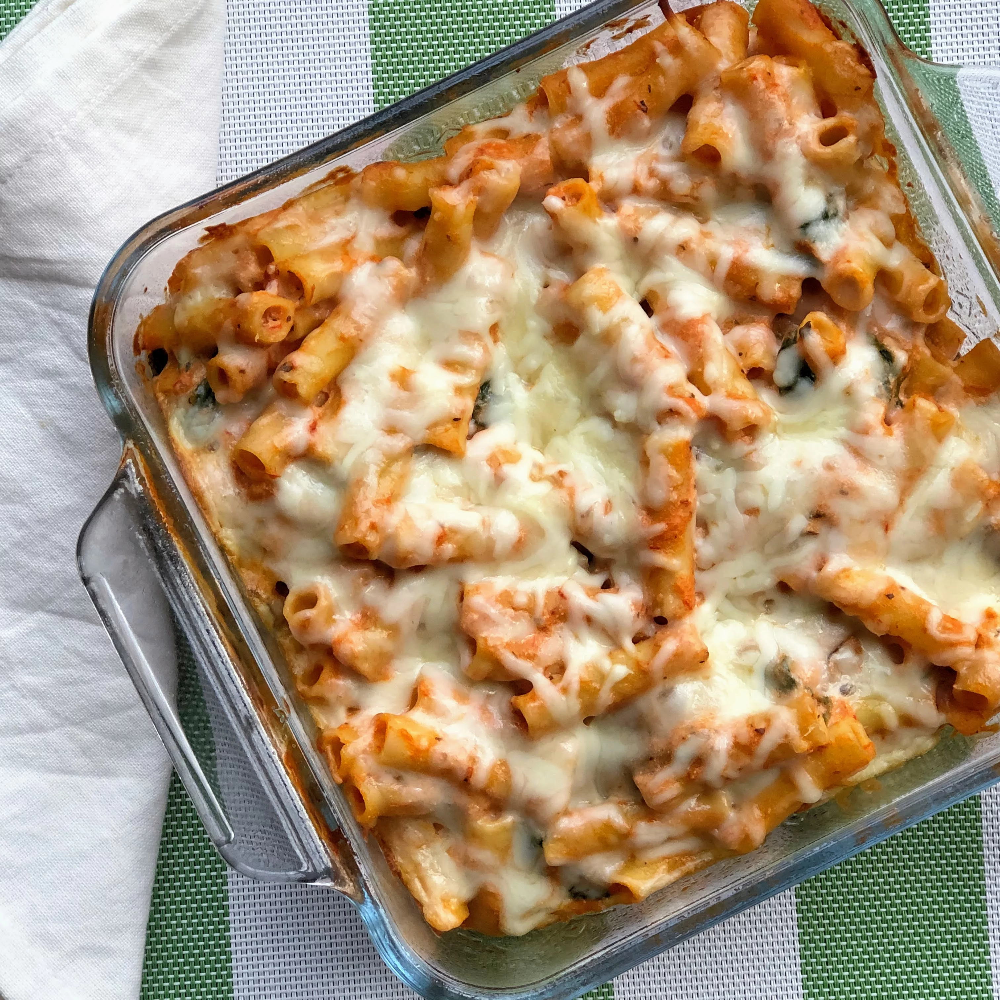

Go back to recipes list
Meatless Baked Ziti Recipe

This is a recipe to prepare Meatless Baked Ziti
Ingredients:
- olive oil cooking spray
- 1 (16 ounce) package ziti pasta
- 1 tablespoon olive oil
- ½ (8 ounce) package fresh spinach, chopped
- 1 (4 ounce) package fresh mushrooms, sliced
- 1 (15 ounce) container part-skim ricotta cheese
- 1 (8 ounce) package crumbled goat cheese
- ½ (8 ounce) package shredded mozzarella cheese
- 1 (14 ounce) jar spaghetti sauce
Steps:
- Preheat the oven to 350 degrees F (175 degrees C). Spray a 9x13-inch baking pan with cooking spray.
- Bring a large pot of lightly salted water to a boil. Add ziti and cook, stirring occasionally, until tender yet firm to the bite, about 8 minutes. Drain and transfer to a large bowl.
- Heat olive oil in a skillet over medium-high heat. Saute spinach and mushrooms in the hot oil until soft, about 5 minutes. Remove from heat and add to ziti.
- Add ricotta cheese, goat cheese, and 1/2 of the mozzarella cheese to the ziti mixture; combine thoroughly. Mix in spaghetti sauce and transfer to the prepared baking pan. Sprinkle with remaining mozzarella cheese.
- Bake, uncovered, in the preheated oven until bubbly and cheese is melted, about 15 minutes.
Cooks Note:
Preferably use a spaghetti sauce made with red wine.
Nutrition Facts
Per Serving:
325 calories; protein 16.5g; carbohydrates 36g; fat 12.6g; cholesterol 32.6mg; sodium 343.7mg. Full Nutrition